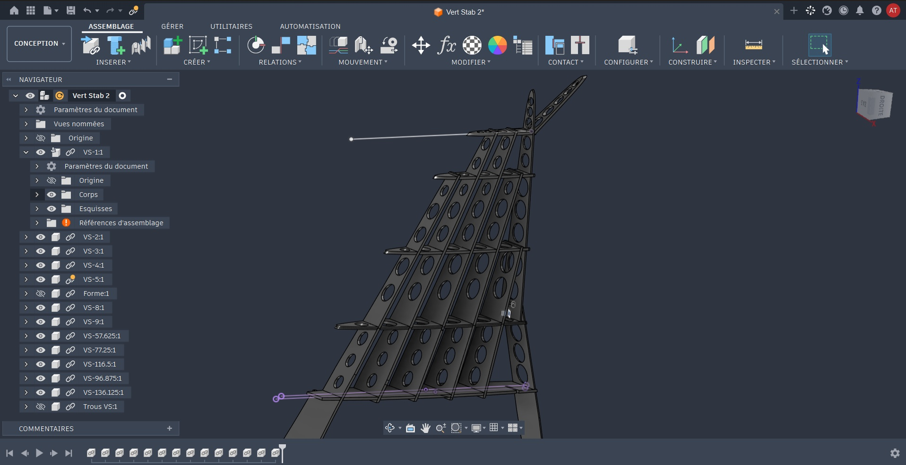
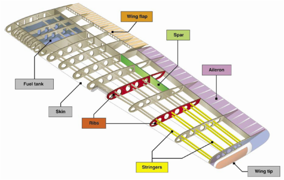

Aeronautical & Mechatronics Engineering Candidate
Practical-minded aerospace engineering student with hands-on experience in CAD modeling, rapid prototyping, and mechatronic systems. Seeking meaningful field engineering work where real-world systems protect lives, ready to apply rigorous prototyping and fast troubleshooting to high-impact defense operations.
M270 Remote Tracked Missile Launcher
ELISA-Aerospace 3rd Year Capstone Project • Defended before Engineering Jury
1. Mission Scope & Operational Requirements
The objective was to engineer a rugged, tracked terrestrial vehicle capable of negotiating uneven obstacles (up to 20 mm step gravel) while remotely pointing and launching standard foam pneumatic projectiles. Strict requirements governed budget limitations, weight distribution, and tight delivery deadlines for live demonstration in the school's agora.
2. Embedded Architecture & Firmware (My Scope)
- Processing Core: ESP32-S3 microcontroller chosen for its dual-core processing capabilities and native Wi-Fi softAP mode (
192.168.4.1). - Telemetry & C2 Protocol: Real-time bi-directional WebSocket interface delivering sub-15ms latency without external router infrastructure. Features independent speed sliders for left/right tracks, virtual D-pad turret azimuth control, and dynamic elevation display.
- Kinematics & Inertial Feedback: Integrated 6-DOF MPU-6050 IMU for pitch/roll monitoring. Programmed safety lockouts preventing vehicle firing if tilt exceeded safe operational envelope (
Pitch Threshold: 15°). - Schematics & Routing: Full hardware distribution mapped in KiCad, incorporating dedicated flyback diodes, optical endstop switches for barrel indexing, and separate logic/motor voltage rails.
3. Mechanics, Geneva Drive & Suspension
Designed in CATIA V5 and fabricated via FDM 3D printing. The turret utilizes a precision Geneva drive (croix de Malte) mechanism coupled with a linear pusher to index revolving projectile chambers reliably. Suspension relies on an articulated multi-bogie architecture with individual return springs for ground compliance.
The Failure: During sustained obstacle crossing stall tests, initial motor drivers experienced thermal shutdown and burnout. The components had been sized assuming advertised 3A peak capacity was valid for continuous duty.
The Correction & Takeaway: In real bench conditions, components sustained thermal runaway beyond 2.5A without forced convection. Redesigned power stages with 30% thermal derating headroom and active telemetry monitoring. Demonstrates that datasheets provide theoretical bounds; physical reliability demands bench-testing continuous loads.
4. Project Leadership & Execution
As technical lead in a 7-person multidisciplinary team, managed unequal workload engagement by redistributing critical path tasks, personally absorbing firmware debugging and wiring bottlenecks, and ensuring compliance with the delivery deadline for faculty jury evaluation.
Douglas DC-3 / C-47 Scale CAD Architecture (1:20)
Historical Blueprints Digitalization • Airframe Skeleton & Hybrid Skinning
1. Project Scope & Structural Intent
The goal of this project is to model an authentic 1:20 scale replica of the legendary Douglas DC-3 (1.50 m wingspan) directly derived from period military technical orders and manufacturer blueprints. While initially conceived as an exhibition-grade display piece, internal load-bearing geometry and wing spars are sized to allow future conversion to radio-controlled flight.
2. True Aeronautical Hierarchy & Nomenclature
Rather than creating an empty solid shell, the airframe reproduces true internal aeronautical structural elements:
- Spars & Formers: Main and auxiliary shear beams carrying bending loads across the center wing section and empennage.
- Lightening Holes Ribs: Internal rib profiles calculated with lightening holes to optimize stiffness-to-weight ratio for FDM manufacturing.
- Part Numbering Traceability: Designed with industrial assembly conventions (
type_part_side_index, e.g.Nervure_WL_42for Wing Left Rib #42). - Kinematic Retractable Gear: Retractable main gear linkage geometry designed to fold into nacelles maintaining historical pivoting axes.
3. Manufacturing Innovation: Hybrid Metal Skinning
To bypass the plastic appearance of conventional 3D prints without requiring industrial tooling, I developed a hybrid skinning technique:
4. Historical CAD Dilemmas & Plan Interpolation
Working from period 1940s-1950s blueprints introduces significant tolerance gaps: cross-sectional views often contradict elevation drawings, and wing-to-fuselage fairing junctions (Karman fairings) lack explicit geometric radius callouts. Resolving these requires geometric loft interpolation, parametric cross-checking, and empirical test slicing in Fusion 360 to guarantee printable tolerances.

Shows parametric feature tree (VS-1 to VS-136.125), internal lightening cutouts, and antenna mount rib.

Fig. 37 & 38 Vertical / Horizontal stabilizer breakdown, rib spacing, and hinge pivot lines.

Technical Tooling, Prototyping & Workshop Skills
Direct hands-on experience ready for workshop and testing deployment
- Autodesk Fusion 360 Advanced
- CATIA V5 / 3D-Experience Proficient
- SketchUp Pro Familiar
- MATLAB / Simulink Academic
- C++ & Arduino Firmware Advanced
- ESP32 / ESP32-S3 Advanced
- KiCad (Schematics & PCB) Proficient
- HTML / WebSockets UI Working Knowledge
- Python (Scripting & Automation) Basic
- FDM 3D Printing & Slicing Daily
- Wiring & Bench Soldering Advanced
- Hand & Power Bench Tools Autonomous